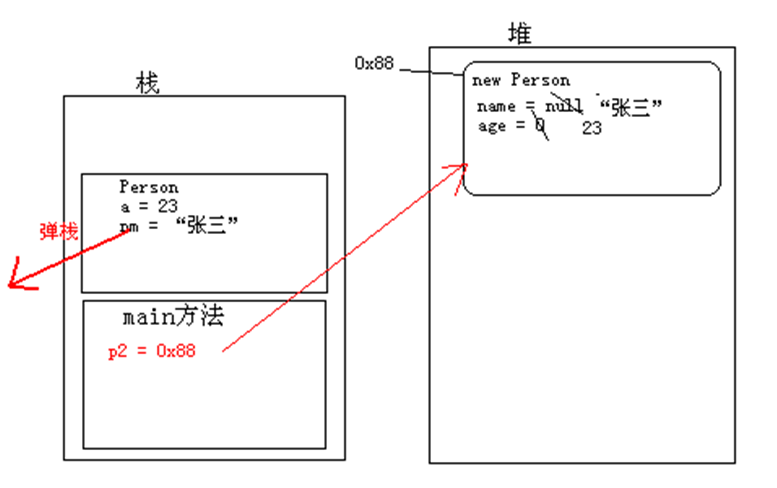

我们对封装已经有了基本的了解，接下来我们来看一个新的问题，依然以Person为例，由于Person中的属性都被private了，外界无法直接访问属性，必须对外提供相应的set和get方法。当创建人对象的时候，人对象一创建就要明确其姓名和年龄，那该怎么做呢？
在开发中经常需要在创建对象的同时明确对象的属性值，比如员工入职公司就要明确他的姓名、年龄等属性信息。
那么，创建对象就要明确属性值，那怎么解决呢？也就是在创建对象的时候就要做的事情，当使用new关键字创建对象时，怎么给对象的属性初始化值呢？这就要学习Java另外一门小技术，构造方法。
那什么是构造方法呢？从字面上理解即为构建创造时用的方法，即就是对象创建时要执行的方法。既然是对象创建时要执行的方法，那么只要在new对象时，知道其执行的构造方法是什么，就可以在执行这个方法的时候给对象进行属性赋值。
构造方法的格式：
修饰符 构造方法名(参数列表)
{
}构造方法的体现：
构造方法没有返回值类型。也不需要写返回值。因为它是为构建对象的，对象创建完，方法就执行结束。
构造方法名称必须和类型保持一致。
构造方法没有具体的返回值。
构造方法的代码体现：
class Person {
// Person的成员属性age和name
private int age;
private String name;
// Person的构造方法，拥有参数列表
Person(int a, String nm) {
// 接受到创建对象时传递进来的值，将值赋给成员属性
age = a;
name = nm;
}
}理解构造方法的格式和基本功能之后，现在就要研究构造方法是怎么执行的呢？在创建对象的时候是如何初始化的呢？
构造方法是专门用来创建对象的，也就是在new对象时要调用构造方法。现在来看看如何调用构造方法。
class Person {
// Person的成员属性age和name
private int age;
private String name;
// Person的构造方法，拥有参数列表
Person(int a, String nm) {
// 接受到创建对象时传递进来的值，将值赋给成员属性
age = a;
name = nm;
}
public void speak() {
System.out.println("name=" + name + ",age=" + age);
}
}
class PersonDemo {
public static void main(String[] args) {
// 创建Person对象，并明确对象的年龄和姓名
Person p2 = new Person(23, "张三");
p2.speak();
}
}上述代码演示了创建对象时构造方法的调用。即在创建对象时，会调用与参数列表对应的构造方法。
上述代码的图解：

图解说明：
1、首先会将main方法压入栈中，执行main方法中的 new Person(23,"张三");
2、在堆内存中分配一片区域，用来存放创建的Person对象，这片内存区域会有属于自己的内存地址（0x88）。然后给成员变量进行默认初始化（name=null，age=0）。
3、执行构造方法中的代码（age = a ; name = nm;）,将变量a对应的23赋值给age，将变量nm对应的”张三赋值给name，这段代码执行结束后，成员变量age和name的值已经改变。执行结束之后构造方法弹栈，Person对象创建完成。将Person对象的内存地址0x88赋值给p2。
在没有学习构造方法之前，我们也可以通过new关键字创建对象，并调用相应的方法，同时在描述事物时也没有写构造方法。这是为什么呢？
在之前学习的过程中，描述事物时，并没有显示指定构造方法，当在编译Java文件时，编译器会自动给class文件中添加默认的构造方法。如果在描述类时，我们显示指定了构造方法，那么，当在编译Java源文件时，编译器就不会再给class文件中添加默认构造方法。
class Person {
//如果没有显示指定构造方法，编译会在编译时自动添加默认的构造方法
//Person(){} //空参数的默认构造方法
}当在描述事物时，要不要在类中写构造方法呢？这时要根据描述事物的特点来确定，当描述的事物在创建其对象时就要明确属性的值，这时就需要在定义类的时候书写带参数的构造方法。若创建对象时不需要明确具体的数据，这时可以不用书写构造方法（不书写也有默认的构造方法）。
构造方法的细节：
1、一个类中可以有多个构造方法，多个构造方法是以重载的形式存在的
2、构造方法是可以被private修饰的，作用：其他程序无法创建该类的对象。
class Person {
private int age;
private String name;
// 私有无参数的构造方法，即外界不能通过new Person();语句创建本类对象
private Person() {
}
// 多个构造方法是以重载的形式存在
Person(int a) {
age = a;
}
Person(String nm, int a) {
name = nm;
age = a;
}
}到目前为止，学习两种方法，分别为构造方法和一般方法，那么他们之间有什么异同呢？
构造方法在对象创建时就执行了，而且只执行一次。
一般方法是在对象创建后，需要使用时才被对象调用，并可以被多次调用。
问题：
有了构造方法之后可以对对象的属性进行初始化，那么还需要对应的set和get方法吗？
需要相应的set和get方法，因为对象在创建之后需要修改和访问相应的属性值时，在这时只能通过set或者get方法来操作。
思考，如下代码有问题吗？
class Person {
void Person() {
}
}
class PersonDemo {
public static void main(String[] args) {
Person p = new Person();
}
}在之前学习方法时，我们知道方法之间是可以相互调用的，那么构造方法之间能不能相互调用呢？若可以，怎么调用呢？
在之前学习方法之间调用时，可以通过方法名进行调用。可是针对构造方法，无法通过构造方法名来相互调用。
构造方法之间的调用，可以通过this关键字来完成。
构造方法调用格式：
this(参数列表);构造方法的调用
class Person {
// Person的成员属性
private int age;
private String name;
// 无参数的构造方法
Person() {
}
// 给姓名初始化的构造方法
Person(String nm) {
name = nm;
}
// 给姓名和年龄初始化的构造方法
Person(String nm, int a) {
// 由于已经存在给姓名进行初始化的构造方法 name = nm;因此只需要调用即可
// 调用其他构造方法，需要通过this关键字来调用
this(nm);
// 给年龄初始化
age = a;
}
}了解了构造方法之间是可以相互调用，那为什么他们之间通过this就可以调用呢？
通过上面的学习，简单知道使用this可以实现构造方法之间的调用，但是为什么就会知道this调用哪一个构造方法呢？接下来需要图解完成。
class Person {
private int age;
private String name;
Person() {
}
Person(String nm) {
name = nm;
}
Person(String nm, int a) {
this(nm);
age = a;
}
}
class PersonDemo {
public static void main(String[] args) {
Person p = new Person("张三", 23);
}
}
图列说明：
1、先执行main方法，main方法压栈，执行其中的new Person(“张三”,23);
2、堆内存中开辟空间，并为其分配内存地址0x33，，紧接着成员变量默认初始化（name=null age = 0）；
3、拥有两个参数的构造方法（Person（String nm , int a））压栈，在这个构造方法中有一个隐式的this，因为构造方法是给对象初始化的，那个对象调用到这个构造方法，this就指向堆中的那个对象。
4、由于Person（String nm , int a）构造方法中使用了this(nm);构造方法Person(String nm)就会压栈，并将“张三”传递给nm。在Person（String nm , int a）构造方法中同样也有隐式的this，this的值同样也为0x33，这时会执行其中name = nm，即把“张三”赋值给成员的name。当赋值结束后Person（String nm , int a）构造方法弹栈。
5、程序继续执行构造方法（Person（String nm , int a）中的age = a；这时会将23赋值给成员属性age。赋值结束构造方法（Person（String nm , int a）弹栈。
6、当构造方法（Person（String nm , int a）弹栈结束后，Person对象在内存中创建完成，并将0x33赋值给main方法中的p引用变量。
注意：
this到底代表什么呢？this代表的是对象，具体代表哪个对象呢？哪个对象调用了this所在的方法，this就代表哪个对象。
调用其他构造方法的语句必须定义在构造方法的第一行，原因是初始化动作要最先执行。
通过上面学习，基本明确了对象初始化过程中的细节，也知道了构造方法之间的调用是通过this关键字完成的。但this也有另外一个用途，接下来我们就学习下。
当在方法中出现了局部变量和成员变量同名的时候，那么在方法中怎么区别局部变量成员变量呢？可以在成员变量名前面加上this.来区别成员变量和局部变量
class Person {
private int age;
private String name;
// 给姓名和年龄初始化的构造方法
Person(String name, int age) {
// 当需要访问成员变量是，只需要在成员变量前面加上this.即可
this.name = name;
this.age = age;
}
public void speak() {
System.out.println("name=" + this.name + ",age=" + this.age);
}
}
class PersonDemo {
public static void main(String[] args) {
Person p = new Person("张三", 23);
p.speak();
}
}学习完了构造方法、this的用法之后，现在做个小小的练习。
需求：在Person类中定义功能，判断两个人是否是同龄人
class Person {
private int age;
private String name;
// 给姓名和年龄初始化的构造方法
Person(String name, int age) {
// 当需要访问成员变量是，只需要在成员变量前面加上this.即可
this.name = name;
this.age = age;
}
public void speak() {
System.out.println("name=" + this.name + ",age=" + this.age);
}
// 判断是否为同龄人
public boolean equalsAge(Person p) {
// 使用当前调用该equalsAge方法对象的age和传递进来p的age进行比较
// 由于无法确定具体是哪一个对象调用equalsAge方法，这里就可以使用this来代替
/*
* if(this.age == p.age) { return true; } return false;
*/
return this.age = p.age;
}
}在创建子类对象时，父类的构造方法会先执行，因为子类中所有构造方法的第一行有默认的隐式super();语句。
格式：
调用本类中的构造方法
this(实参列表);
调用父类中的空参数构造方法
super();
调用父类中的有参数构造方法
super(实参列表);为什么子类对象创建都要访问父类中的构造方法？因为子类继承了父类的内容，所以创建对象时，必须要先看父类是如何对其内容进行初始化的，看如下程序：
public class Test {
public static void main(String[] args) {
new Zi();
}
}
class Fu{
int num ;
Fu(){
System.out.println("Fu构造方法"+num);
num = 4;
}
}
class Zi extends Fu{
Zi(){
//super(); 调用父类空参数构造方法
System.out.println("Zi构造方法"+num);
}
}执行结果：
Fu构造方法0
Zi构造方法4
通过结果发现，子类构造方法执行时中，调用了父类构造方法，这说明，子类构造方法中有一句super()。
那么，子类中的构造方法为什么会有一句隐式的super()呢？
原因：子类会继承父类中的内容，所以子类在初始化时，必须先到父类中去执行父类的初始化动作。这样，才可以使用父类中的内容。
当父类中没有空参数构造方法时，子类的构造方法必须有显示的super语句，指定要访问的父类有参数构造方法。
如果子类的构造方法第一行写了this调用了本类其他构造方法，那么super调用父类的语句还有吗？
这时是没有的，因为this()或者super(),只能定义在构造方法的第一行，因为初始化动作要先执行。
父类构造方法中是否有隐式的super呢？
也是有的。记住：只要是构造方法默认第一行都是super();
父类的父类是谁呢？super调用的到底是谁的构造方法呢？
Java体系在设计，定义了一个所有对象的父类Object
注意：
类中的构造方法默认第一行都有隐式的super()语句，在访问父类中的空参数构造方法。所以父类的构造方法既可以给自己的对象初始化，也可以给自己的子类对象初始化。
如果默认的隐式super()语句在父类中没有对应的构造方法，那么必须在构造方法中通过this或者super的形式明确要调用的构造方法。
练习：描述学生和工人这两个类，将他们的共性name和age抽取出来存放在父类中，并提供相应的get和set方法，同时需要在创建学生和工人对象就必须明确姓名和年龄
//定义Person类，将Student和Worker共性抽取出来
class Person {
private String name;
private int age;
public Person(String name, int age) {
// super();
this.name = name;
this.age = age;
}
public String getName() {
return name;
}
public void setName(String name) {
this.name = name;
}
public int getAge() {
return age;
}
public void setAge(int age) {
this.age = age;
}
}
class Student extends Person {
// Student类的构造方法
Student(String name, int age) {
// 使用super关键字调用父类构造方法，进行相应的初始化动作
super(name, age);
}
public void study() {// Studnet中特有的方法
System.out.println(this.getName() + "同学在学习");
}
}
class Worker extends Person {
Worker(String name, int age) {
// 使用super关键字调用父类构造方法，进行相应的初始化动作
super(name, age);
}
public void work() {// Worker 中特有的方法
System.out.println(this.getName() + "工人在工作");
}
}
public class Test {
public static void main(String[] args) {
Student stu = new Student("小明",23);
stu.study();
Worker w = new Worker("小李",45);
w.work();
}
}